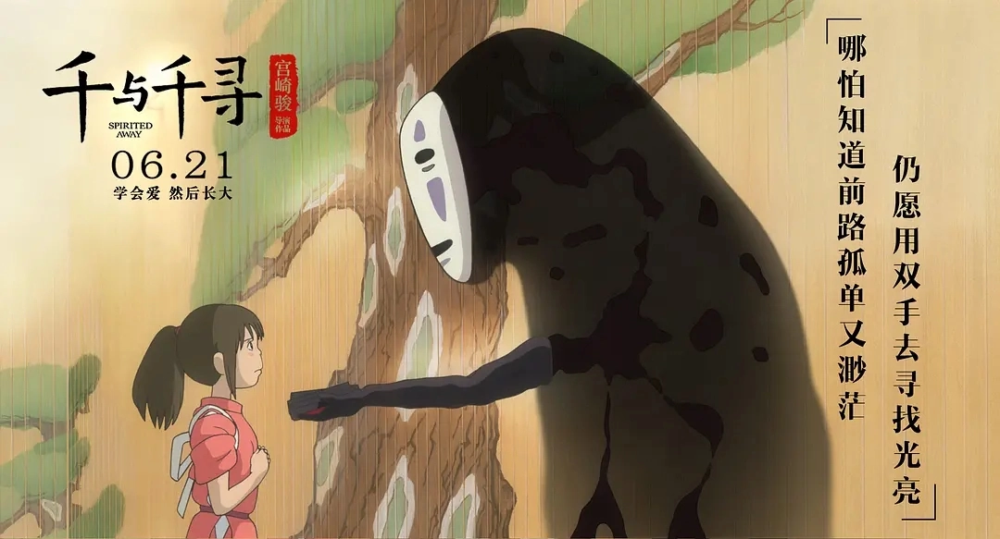
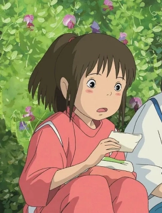
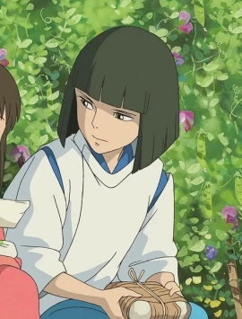
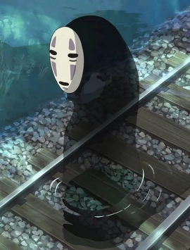
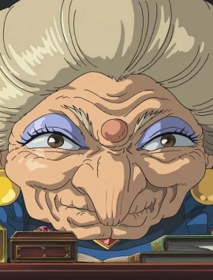
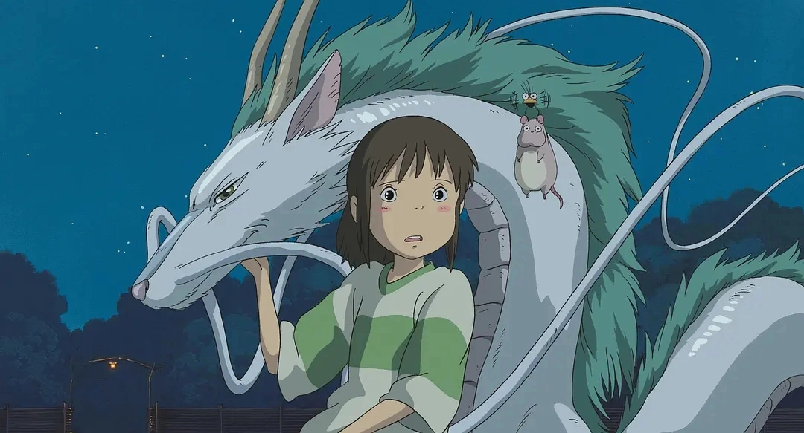
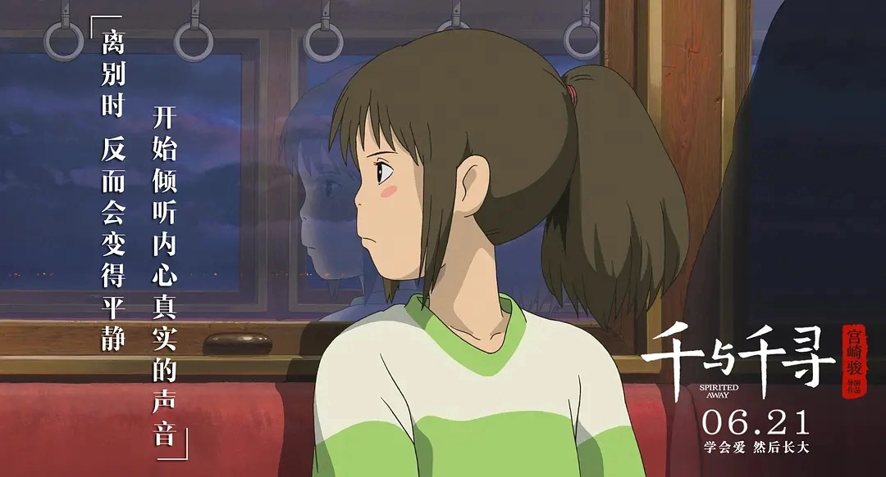
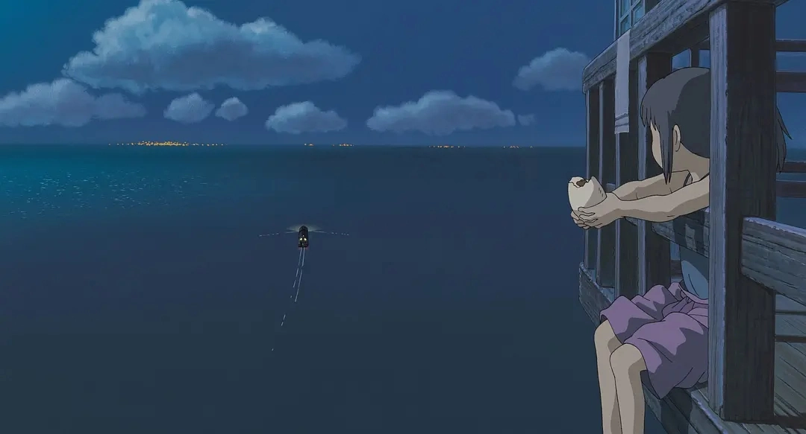
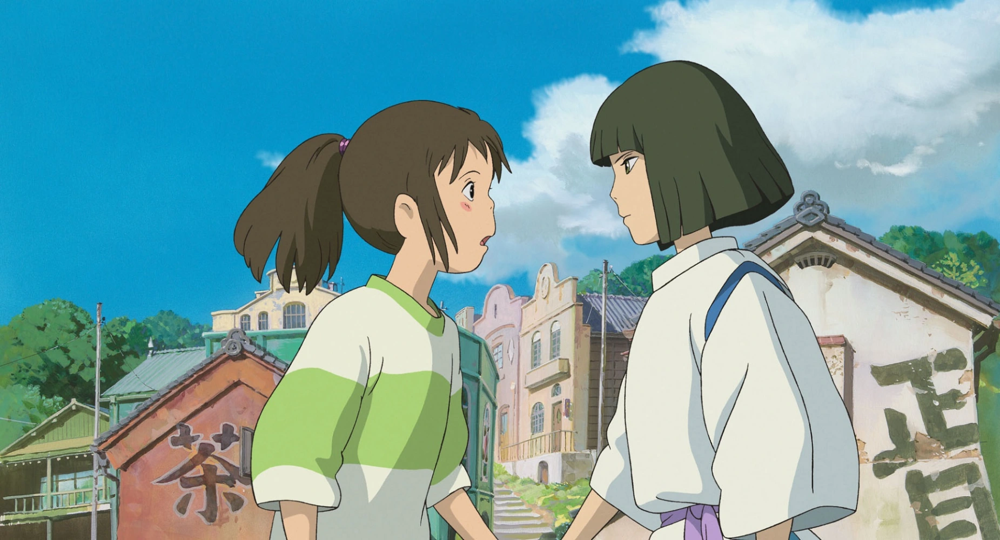

《千与千寻》奇幻之旅

《千与千寻》（千と千尋の神隠し）是吉卜力工作室于2001年推出的动画电影，由宫崎骏执导。这部电影讲述了一个10岁女孩荻野千寻意外进入神灵世界后，为了拯救变成猪的父母而经历的奇幻冒险故事。
电影亮点
《千与千寻》不仅是日本影史票房最高的电影，也是唯一同时获得奥斯卡最佳动画长片和柏林电影节金熊奖的动画电影。影片以其丰富的想象力、深刻的主题和精美的画面赢得了全球观众的喜爱。
经典片段
观看《千与千寻》经典片段，感受这段奇幻的成长之旅。
剧情详解
10岁的荻野千寻与父母在搬家途中误入神灵世界，父母因贪吃神灵的食物而被变成了猪。千寻为了救回父母，在汤屋老板汤婆婆手下工作，并改名为"千"。
在神灵世界，千寻遇到了许多奇特的角色：神秘的少年白龙、无脸男、锅炉爷爷等。她必须在这个充满规则和危险的世界中生存，同时保持自己的本心不被改变。
随着故事发展，千寻逐渐成长，帮助白龙找回真名，化解无脸男的愤怒，最终通过汤婆婆的考验，救回了父母并回到了人类世界...
"记住你的名字，否则你就找不到回家的路了。"
主要角色

荻野千寻
本片女主角，10岁女孩，被迫在神灵世界工作以救回变成猪的父母。从一个胆小、依赖父母的女孩成长为勇敢、独立的少女。
我必须工作，否则会变成动物。

白龙
神秘的少年，汤婆婆的弟子，帮助千寻适应神灵世界的生活。实际上是河神，因河流被填平而无家可归。
我曾经也忘记了自己的名字。

无脸男
神秘的幽灵，渴望朋友和关注，能够变出黄金，但内心孤独。最终被千寻的善良感化，留在钱婆婆处工作。
寂寞...好寂寞...

汤婆婆
汤屋的经营者，强大的女巫，通过夺取他人名字来控制他们。虽然严厉，但对自己的巨婴儿子极其溺爱。
在这里不工作的人都会变成动物！
获奖记录
主要奖项
- 第75届奥斯卡金像奖 - 最佳动画长片
- 第52届柏林国际电影节 - 金熊奖
- 第21届香港电影金像奖 - 最佳亚洲电影
- 第25届日本电影学院奖 - 最佳影片
- 第30届安妮奖 - 最佳动画长片
精彩剧照




幕后花絮
你不知道的《千与千寻》
电影灵感来自宫崎骏朋友的10岁女儿，他认为现代日本孩子被过度保护，缺乏独立能力。
汤屋的设计参考了台湾九份的传统建筑和日本道后温泉本馆。
无脸男原本只是一个背景角色，但在制作过程中被赋予了更多戏份。
电影中的"腐烂神"场景灵感来自宫崎骏参与清理河道的亲身经历。
这是第一部获得奥斯卡最佳动画长片的非英语动画电影。